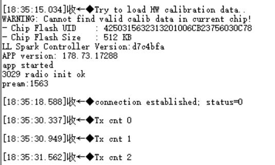
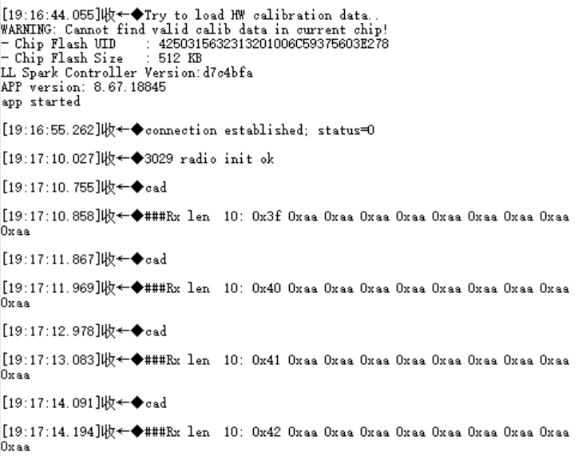

Cad说明¶
1. 功能说明¶
芯片支持CAD-IRQ中断，开启CAD功能并进入Rx模式后，芯片会检测信道中是否存在ChirpIOT™信号，如果存在则将CAD-IRQ置高，外部MCU可以通过在一定时间内检测CAD-IRQ信号是否拉高来判断信道中是否存在ChirpIOT™信号。
2 环境准备¶
PAN3740 EVB两块
Type-C USB线两条（用于供电和查看串口打印Log）
硬件接线：
使用USB线，将PC USB与EVB Type-C USB（USB->UART）相连
EVB板IO11与P31（CAD IRQ）相连
PC软件: 串口调试助手（UartAssist）或终端工具（SecureCRT），波特率921600
手机（nrf connect）
4. 演示说明¶
4.1 cad_tx¶
CAD功能可以被用于发射前的信道检测LBT（Listen Before Talk），以保证当前信道空闲，随后进行数据发射，避免无线信号碰撞干扰，提高通信成功率。
软件应用参考
设置待检测信道的基本参数，SF/BW/FREQ等
设置发送数据包的前导码时长PREAM_TIME_MS。由于演示例程不提供时间同步功能，为了实现正常接收，需要设置足够长的发射前导码时间，发射时间需要足够覆盖cad_rx的扫描间隔。
调用rf_listen_before_talk_start();接口。打开CAD功能，设置CAD接收检测，设置超时定时器
如果触发CAD IO中断处理函数，则将cad_tx_detect_flag置位为MAC_EVT_TX_CAD_ACTIVE
如果触发定时器超时回调函数，则将cad_tx_detect_flag置位为MAC_EVT_TX_CAD_TIMEOUT
根据上述cad_tx_detect_flag变化，判断信道空闲状态，并决定是否进行发射。
打开手机nrf connect app，找到广播b+cad tx，连接并使能，使能会开启定时器，默认定时时间为500ms，可通过app修改定时发送时间，定时时间到启动一次发送。
串口打印：

cad发送log显示¶
检测发射前的信道检测LBT，需要两个evb下载cad_tx程序，当信道中存在ChirpIOT™信号时，其中一个设备会在串口打印“cad active, tx cancel, try again later”，表示触发CAD TX退避机制。
注意事项
当测试tx退避机制时，需要修改cad_tx工程中代码中的广播设备名称及mac地址，使两个可执行程序的广播设备名称及mac地址不相同，否则手机无法识别为两个广播
4.2 cad_rx¶
CAD功能被用于接收前的信道检测，用来检查当前信道是否存在有用信号，随后决定，继续接收，或是关闭接收，进入待机或休眠状态，以降低功耗。
软件应用参考
设置待检测信道的基本参数，SF/BW/FREQ等
设置PREAM_TIME_MS，参数与rf_listen_before_talk_start相同，用于cad超时时间判断。
打开CAD功能，设置CAD接收检测
调用check_cad_rx_inactive();接口
如果检测到有用信号，返回LEVEL_ACTIVE，可继续等待接收
如果检测不到有用信号，则进入STB3待机状态，返回LEVEL_INACTIVE，用户可自行选择后续操作
打开手机nrf connect app，找到广播b+cad rx，连接并使能，使能会初始化rf并启动接收，当CAD_IRQ触发，打印当前接收的数据。
串口打印：

cad接收log显示¶
5. 特别注意¶
在使用CAD功能时，需要根据应用场景配置rf_cad_on(uint8_t threshold, uint8_t chirps)函数中的传参，在使用完CAD功能后，建议调用rf_set_cad_off()函数，rf_set_cad_off()函数可以关闭CAD功能并将接收阈值恢复。
6 RAM/Flash资源使用情况¶
PAN107x: TX
Flash Size: 164.19k
RAM Size: 40.09 k
PAN107x: RX
Flash Size: 163.69k
RAM Size: 40.08 k